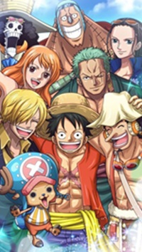
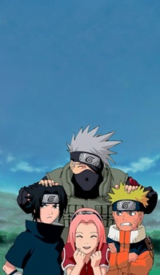
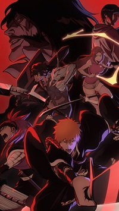

The Legends That Defined a Generation
In the early 2000s, anime experienced an explosive surge in global popularity, largely driven by three long-running Shonen series that dominated television screens and manga sales worldwide. Collectively known as "The Big Three," these franchises introduced millions of Western fans to Japanese animation and set the standard for modern action-adventure series.
Meet the Titans
- One Piece (1999 - Present)
-

Created by Eiichiro Oda, this pirate epic follows Monkey D. Luffy and his Straw Hat crew in their search for the legendary "One Piece" treasure. Famous for its incredible world-building, emotional storytelling, and themes of freedom and dreams, it is currently the best-selling manga in history, surpassing even Batman comics in total sales.
- Naruto (2002 - 2017)
-

Masashi Kishimoto's tale of a young, ostracized ninja seeking recognition and the title of Hokage resonated deeply with a global audience. Its intricate chakra-based combat system, memorable villains like the Akatsuki, and core themes of hard work versus natural talent made it a gateway anime for an entire generation.
- Bleach (2004 - 2012, 2022 - Present)
-

Tite Kubo's stylish supernatural action series focuses on Ichigo Kurosaki, a teenager who gains the powers of a Soul Reaper. Known for its "cool factor," unique character designs, and intense sword battles, it recently made a massive comeback with the "Thousand-Year Blood War" arc, reminding fans why it was always considered one of the greats.